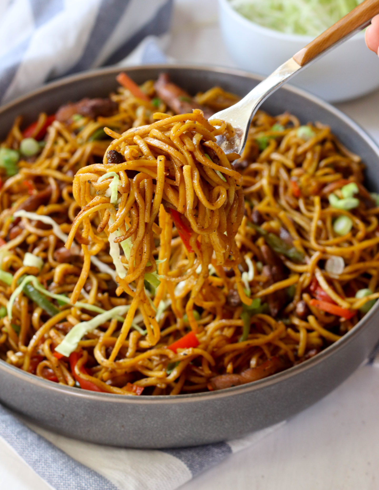

Chicken Chow Mein

Description
Chow down this healthy little noodle number that combines chicken breast,
zucchini, carrots and chow-mein noodles in a flavourful Chinese sauce.
Ingredients:
- 2 teaspoons soy sauce
- 1 teaspoon cornstarch
- ¼ teaspoon sesame oil
- ½ pound skinless, boneless chicken breast halves, cut into strips
- ¾ cup chicken broth
- 2 tablespoons oyster sauce
- ¾ teaspoon white sugar
- ½ pound chow mein noodles
- 1 tablespoon vegetable oil
- 1 teaspoon minced garlic
- 2 heads bok choy, chopped
- ½ zucchini, diced
- 10 sugar snap peas
- 1 carrot, cut into thin strips
- 2 tablespoons chopped green onion
Steps:
- Whisk soy sauce, corn starch, and sesame oil together in a large bowl
until smooth; add chicken strips and toss to coat. Cover and refrigerate
for at least 20 minutes.
- Combine chicken broth, oyster sauce, and sugar in a small bowl and set
aside.
- Bring a large pot of water to a boil. Add noodles and cook over medium
heat until cooked through but still firm to the bite, 4 to 5 minutes.
Drain and rinse with cold water.
- Heat vegetable oil in a large skillet. Cook and garlic in hot oil for
30 seconds; add marinated chicken. Cook and stir until browned and no
longer pink in the center, 5 to 6 minutes. Remove chicken mixture to a
plate. Cook and stir bok choy, zucchini, snap peas, and carrot in the
hot skillet until softened, about 2 minutes. Return noodles and chicken
mixture to the skillet. Pour broth mixture into noodle mixture;
cook and stir until warmed through, about 2 minutes. Serve garnished
with green onions.